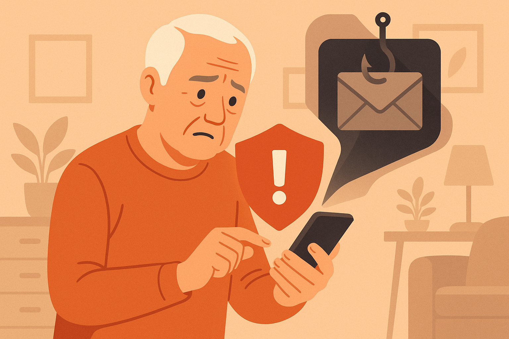
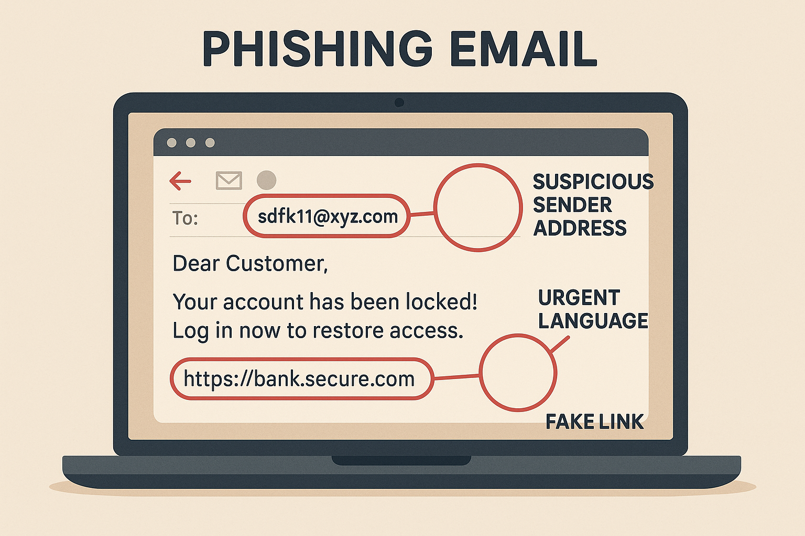
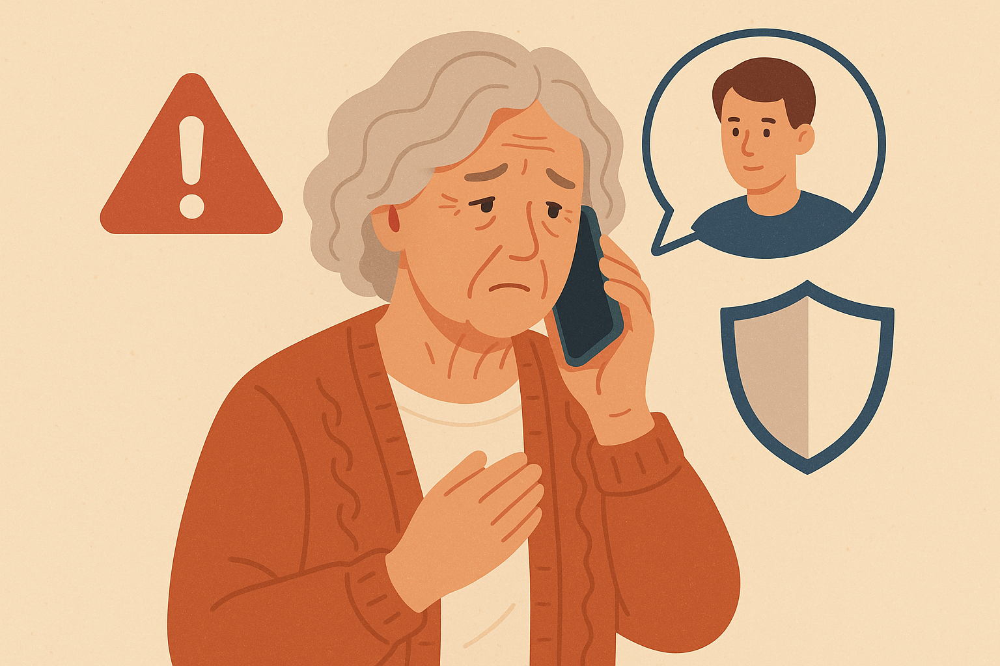
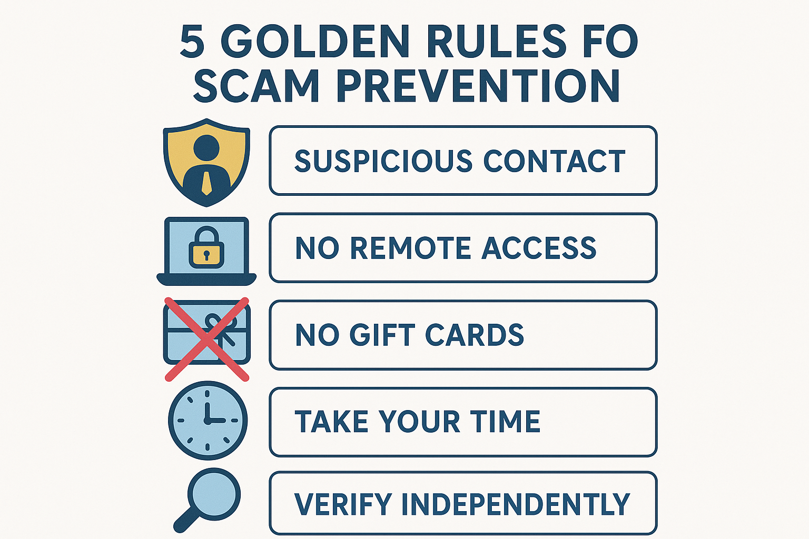

How North York Seniors Can Avoid Common Tech Scams

Knowing what to look for is your best defense against tech scams.
Last month, a woman in Willowdale called me in tears. She'd received a phone call from someone claiming to be from the CRA (Canada Revenue Agency) telling her she owed $4,000 in back taxes and that police were on their way to arrest her unless she paid immediately — with gift cards. She was terrified. She drove to the Shoppers Drug Mart on Yonge and Sheppard, bought $2,000 worth of Google Play gift cards, and read the codes to the caller over the phone before her daughter found out and stopped her.
Unfortunately, this story isn't unusual. I hear versions of it regularly from the seniors I help throughout North York, Willowdale, Don Mills, and Bayview Village. The Canadian Anti-Fraud Centre reported that Canadians lost over $500 million to fraud in 2024, and seniors are disproportionately targeted. The scams are getting smarter, more sophisticated, and harder to spot.
But here's the thing: once you know what these scams look like, they become much easier to recognize and avoid. Scammers follow patterns. They use the same tricks over and over because those tricks work — until people learn to spot them. That's what this guide is about.
I'm going to walk you through the seven most common tech scams targeting seniors in the Greater Toronto Area, show you exactly what they look like, explain the red flags to watch for, and tell you what to do if you think you've been targeted. By the end of this article, you'll feel much more confident about what's real and what's a scam.
Let's start with the most dangerous ones first.
Scam #1: The "CRA" or "Service Canada" Phone Call
This is the most common scam I see in North York. Here's how it works:
- You receive a phone call or automated voicemail
- The caller claims to be from the CRA, Service Canada, or the RCMP
- They say you owe money, have committed tax fraud, or that your SIN has been compromised
- They threaten arrest, deportation, or legal action
- They demand immediate payment — often via gift cards, wire transfer, or cryptocurrency
- Call to threaten you with arrest
- Demand payment by gift cards, Bitcoin, or wire transfer
- Ask for personal information by phone unless you called them first
- Leave threatening voicemails
What to do: Hang up. That's it. Don't press any buttons. Don't talk to the caller. Just hang up. If you're worried it might be real, call the CRA directly at 1-800-959-8281 (you can find this number on the official canada.ca website). They can confirm whether you actually owe anything.
Scam #2: Phishing Emails ("Your Account Has Been Suspended")
Phishing emails are designed to look like they come from companies you trust — your bank, Amazon, Netflix, Canada Post, or Apple. They typically tell you that something is wrong with your account and that you need to "verify" or "update" your information immediately.

Phishing emails often look convincing at first glance — but the red flags are there when you know where to look.
What a Phishing Email Looks Like:
Subject: ⚠️ URGENT: Your Amazon Account Has Been Locked
Dear Customer,
We have detected unusual activity on your account. Your account has been temporarily suspended. Please click the link below to verify your identity and restore access.
[Verify Your Account Now]
If you do not verify within 24 hours, your account will be permanently deleted.
Amazon Security Team
Red Flags to Watch For:
- The sender's email address looks wrong. Look closely: it says "amaz0n" (with a zero) instead of "amazon." Real companies send from their actual domain.
- Urgency and threats. Phrases like "act now," "within 24 hours," or "your account will be deleted" are designed to make you panic and act without thinking.
- Generic greeting. "Dear Customer" instead of your actual name.
- Asks you to click a link. Legitimate companies rarely ask you to click a link to fix account problems.
- Grammar mistakes. While scams are getting better at this, many still have awkward phrasing or spelling errors.
Scam #3: The "Microsoft Support" Pop-Up
You're browsing the internet and suddenly a terrifying message fills your screen. It might say something like:
Your computer has been infected with a Trojan virus.
Your personal data, banking information, and passwords are at risk.
DO NOT SHUT DOWN YOUR COMPUTER.
Call Microsoft Support immediately: 1-888-XXX-XXXX
Error Code: DW6VB36
These pop-ups are designed to scare you into calling a fake support number. When you call, the scammer will:
- Ask you to give them remote access to your computer
- Pretend to find "problems" on your machine
- Charge you hundreds of dollars for "repairs" that aren't needed
- Sometimes install actual malware while they have access
How to close these pop-ups:
- Don't call the number
- Don't click anything on the pop-up
- Press Ctrl + W (Windows) or Command + W (Mac) to close the browser tab
- If that doesn't work, press Alt + F4 (Windows) or Command + Q (Mac) to close the entire browser
- If your computer seems completely frozen, hold down the power button for 10 seconds to force it to shut down, then turn it back on
Scam #4: The "Grandchild in Trouble" Phone Call
This scam is particularly cruel. Someone calls pretending to be your grandchild (or a police officer calling on their behalf). They say your grandchild has been arrested, is in the hospital, or has been in an accident and needs money immediately.
The caller might sound panicked and say things like:
- "Grandma, it's me. Please don't tell Mom and Dad."
- "I'm in trouble and I need you to send money right away."
- "My lawyer says I need $3,000 for bail."
Modern scammers are even using AI voice technology to make the voice sound like your actual grandchild. They get voice samples from social media videos and create eerily convincing imitations.

The "grandchild in trouble" scam preys on your love for your family — verify before you act.
How to protect yourself:
- Hang up and call your grandchild directly using the phone number you have saved in your contacts
- Set up a family code word — a secret word that only your family knows, so you can verify identity over the phone
- Ask a question only your real grandchild would know — like the name of their pet or their birthday
- Never send money based on a phone call alone — even if the voice sounds familiar
- Call another family member to verify before taking any action
Scam #5: Fake Text Messages ("Your Package Cannot Be Delivered")
These texts look like they come from Canada Post, FedEx, UPS, or Amazon. They say something like:
— or —
CIBC Alert: Suspicious activity detected on your account. Verify now: https://cibc-secure-verify.com
Red flags in text scams:
- The link looks suspicious. Notice "canadap0st" (with a zero) instead of "canadapost." And legitimate companies use their real domain (cibc.com, not cibc-secure-verify.com).
- You aren't expecting a package. If you didn't order anything, a delivery notification is suspicious.
- It asks you to click a link. Banks and delivery companies have apps and official websites — they don't need you to click text message links.
What to do: Don't tap the link. Delete the text. If you're genuinely expecting a package, go to the carrier's official website (canadapost.ca) and use the tracking number from your order confirmation email.
Scam #6: Romance Scams on Social Media
Romance scams have exploded on Facebook, Instagram, and dating apps. A scammer creates a fake profile — often using stolen photos of an attractive person — and strikes up a conversation. Over weeks or months, they build a relationship and gain your trust. Then they start asking for money.
Common stories they use:
- "I'm a soldier deployed overseas and need money to come home to see you."
- "I'm a doctor working abroad and my wallet was stolen."
- "I need money for a medical emergency — I'll pay you back when I return to Canada."
- "I have a great investment opportunity I want to share with you."
Warning signs of a romance scam:
- They claim to be from your area but are currently "traveling" or "working overseas"
- They avoid video calls or always have an excuse
- The relationship moves very fast — they say "I love you" within days or weeks
- They eventually ask for money, gift cards, or cryptocurrency
- Their profile is new and has few friends or connections
Scam #7: Tech Support Refund Scams
This is a newer scam that's been hitting North York hard. Here's how it works:
- You get an email saying a tech company (like Norton, McAfee, or Geek Squad) has charged you $399 for a service you didn't buy
- The email includes a phone number to call for a "refund"
- When you call, the scammer asks you to install remote access software so they can "process the refund"
- They pretend to "accidentally" refund too much money (for example, $3,999 instead of $399)
- They panic and beg you to send back the "extra" money via wire transfer or gift cards
- In reality, they've manipulated your screen to make it look like money was deposited — no actual money was transferred
The Golden Rules of Scam Prevention
After helping dozens of seniors in North York deal with scams and near-misses, I've distilled everything down to a handful of rules that will protect you from almost every scam out there:
Rule 1: If Someone Contacts You First, Be Suspicious
Legitimate companies don't cold-call you about problems with your accounts. If you didn't initiate the contact, treat it with extreme caution. This applies to phone calls, emails, text messages, and social media messages.
Rule 2: Never Give Remote Access to Your Computer
Unless you called a trusted tech support person yourself (like me!), never let someone access your computer remotely. If someone asks you to download AnyDesk, TeamViewer, or any remote access tool — that's a scam.
Rule 3: No Legitimate Organization Accepts Gift Cards as Payment
Not the CRA. Not the police. Not your bank. Not any court. If someone asks you to pay with gift cards, it's a scam. Full stop. Gift cards are untraceable, which is exactly why scammers love them.
Rule 4: Take Your Time
Scammers create urgency because they don't want you to think clearly. If someone says you must act "right now" or face consequences, that pressure is the scam. Real organizations give you time. Take a breath. Call a family member. Call me. Talk to someone you trust before taking action.
Rule 5: Verify Independently
If someone claims to be from your bank, hang up and call the number on the back of your debit or credit card. If an email says it's from Amazon, don't click the link — open your browser and go to amazon.ca directly. Always verify through a channel you control, not through information the caller gives you.

Keep these five rules in mind and you'll be protected from the vast majority of tech scams.
What to Do If You Think You've Been Scammed
If you've already fallen for a scam, don't feel embarrassed. These scams are designed by professionals who do this all day, every day. Even tech-savvy people get fooled sometimes. Here's what to do:
- Contact your bank immediately. If you shared banking information or made a payment, call your bank's fraud department right away. They may be able to reverse transactions or freeze your accounts to prevent further loss.
- Change your passwords. If you shared any login information, change those passwords immediately. Start with your email password, then your banking password, then anything else you can think of.
- Report it to the Canadian Anti-Fraud Centre. Call 1-888-495-8501 or visit antifraudcentre-centreantifraude.ca.
- Report it to Toronto Police. You can file a report online at tps.ca or call the non-emergency line.
- If someone accessed your computer remotely, have it checked by a trusted tech professional. They may have installed malware or spyware.
- Tell your family and friends. Alerting others can prevent them from falling for the same scam.
Free Resources for Scam Protection in Canada
- Canadian Anti-Fraud Centre: antifraudcentre-centreantifraude.ca — Report fraud and see current scam alerts
- Competition Bureau Canada: competitionbureau.gc.ca — Fraud prevention resources
- Get Cyber Safe: getcybersafe.gc.ca — Government of Canada cyber security advice
- North York Community House: Offers free digital literacy workshops for seniors
Frequently Asked Questions
What should I do if I already gave money to a scammer?
Contact your bank immediately — they may be able to reverse the transaction, especially if it happened recently. Then report the scam to the Canadian Anti-Fraud Centre at 1-888-495-8501 and file a report with Toronto Police. Change passwords for any accounts you may have shared information about. Don't be embarrassed — reporting helps protect others.
Will Microsoft or Apple ever call me about a problem with my computer?
No, never. Microsoft, Apple, and Google do not make unsolicited calls to individual customers about computer problems. If someone calls claiming to be from any of these companies, it's a scam. Hang up immediately. The same goes for calls claiming to be from "Windows Support" or "Apple Care."
How do I know if an email is a phishing scam?
Check the sender's email address carefully — scammers use addresses that look similar to real ones but are slightly different (like @amaz0n.com instead of @amazon.com). Look for urgent language, generic greetings ("Dear Customer"), requests to click links, and threats about your account being closed. When in doubt, don't click — go to the company's website directly.
Is it safe to click links in text messages?
Be very cautious. Don't click links in texts from unknown numbers or unexpected messages about packages, bank alerts, or account issues. Legitimate organizations have official apps and websites you can visit directly. If you're expecting a package, check the tracking on the carrier's official website using the tracking number from your order confirmation.
How can I protect myself from AI voice scams?
Set up a family code word — a simple word or phrase that only your family knows. If someone calls claiming to be a family member in trouble, ask for the code word. Also, always try calling the family member directly on their known phone number before taking any action.
Should I use antivirus software?
Yes, but you may already have it. Windows computers come with Windows Defender built in, which is quite good. Macs have built-in security features as well. You don't need to buy expensive antivirus software — the free, built-in options are usually sufficient for everyday use. Just make sure your computer is set to update automatically.
Worried About Scams? I Can Help.
If you've received a suspicious call, email, or pop-up and aren't sure if it's real, give me a call. I'm happy to take a look and let you know if it's a scam — no charge for a quick phone consultation. If your computer has been compromised, I can come to your home and clean it up.
$45/hour with satisfaction guaranteed
Call or Text: 289-203-4346Serving North York, Willowdale, Bayview Village, Don Mills & surrounding areas
Related Articles
- How to Spot Tech Scams: Red Flags Every Senior Should Know
- Setting Up Email on iPhone for North York Seniors
- Computer Running Slow? 5 Simple Fixes That Actually Help
- Speed Up Your Slow Computer: Easy Fixes for Toronto Seniors
Anthony is a tech support specialist serving seniors in North York, Willowdale, and surrounding areas. He provides patient, in-home technology help including scam protection, computer security, and digital literacy. He holds a Bachelor of Commerce from TMU and certifications in AI Engineering from IBM and Google.